Electron flow and mechanisms
Week 2 · Account for bonds, atoms and charge
What will you be able to explain?
- Identify an electron-pair source and acceptor.
- Draw valid arrows for an elementary step.
- Distinguish intermediates, transition states and catalysts.
Predict before the worked drawing
Given CH₃OH and OH⁻, draw the pair that forms a new O–H bond. What second pair must move? Do not decide equilibrium position from arrows alone.
Arrows follow electron pairs

A lone pair forms the new O–H bond while the original O–H bonding pair returns to oxygen.
Every full-headed curved arrow starts at a lone pair or bond. Two arrows are needed for this proton transfer.
A neutral base can become a cation
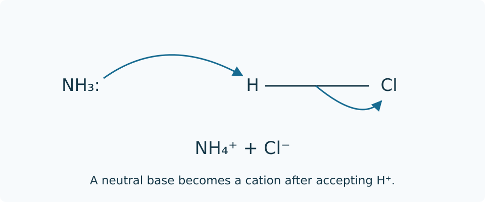
A neutral base can become a cation
Read the new N–H bond in ammonia protonation. Identify both original electron pairs before writing products.
Audit the nitrogen after proton transfer
A neutral base can become a cation
Draw NH₄⁺ with four N–H bonds. Explain why four bonds and no lone pair require +1, then locate the opposite charge.
Predict before the worked drawing
Break the C–Br bond in CH₃Br formally by giving both electrons to Br. Which two charges must appear? Is a balanced drawing sufficient evidence of a fast reaction?
Both bonding electrons can stay together

The C–Br bonding pair moves to bromine, giving formally separated positive and negative ions.
Heterolysis gives the two bonding electrons to one atom. Charge separation must appear in the products.
Count before using a charge label
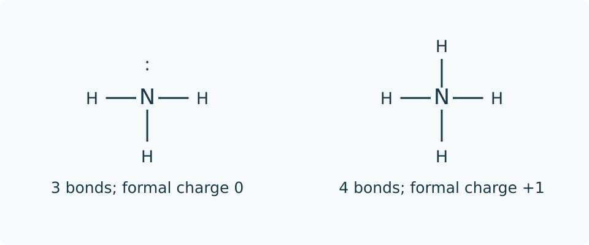
Count before using a charge label
Compare three-bond NH₃ with four-bond NH₄⁺. Which available lone pair has become a bond?
Transfer the counting rule to an attacking amine
Count before using a charge label
If NH₃ adds a bond to CH₃ instead of H, predict CH₃NH₃⁺ before any later proton transfer.
Name the donor and acceptor
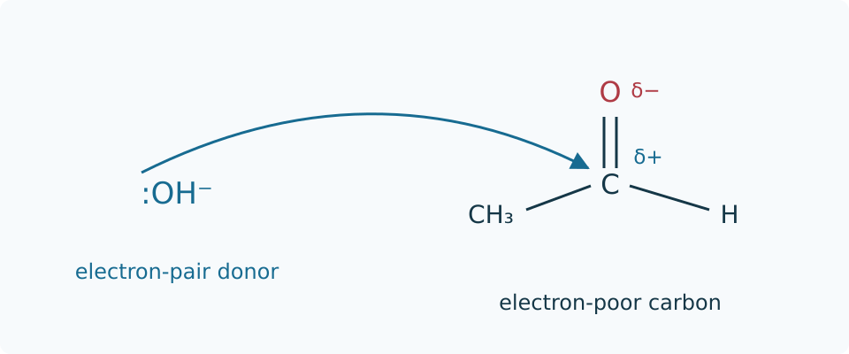
A hydroxide lone pair is the source and the polar carbonyl carbon is an electron-pair acceptor.
A nucleophile donates a pair to form a bond; an electrophile accepts it. A neutral molecule may be either.
A new bond need not give a neutral product
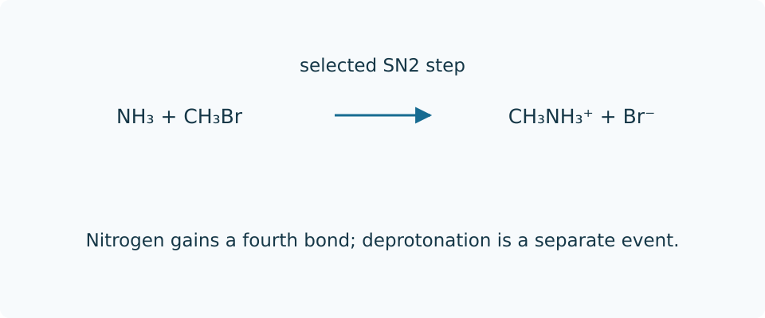
A new bond need not give a neutral product
Read the methyl–nitrogen bond formation. Explain why the immediate product retains three N–H bonds.
Choose the next chemical operation
A new bond need not give a neutral product
Draw another NH₃ accepting a proton from CH₃NH₃⁺. Track the pair returning to methylamine N.
Predict before the worked drawing
Draw the immediate product when OH⁻ adds to CH₃CHO. Count every carbon bond order and place the charge before protonating anything.
Do not give carbon five bonds
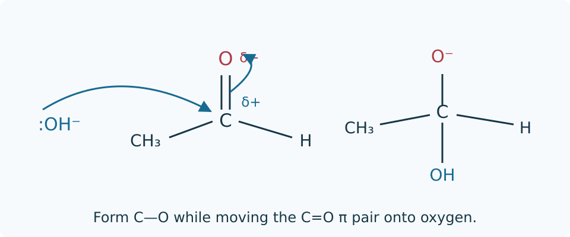
Hydroxide addition moves the carbonyl pi pair to oxygen and makes a tetrahedral alkoxide.
New C–O bond formation and C=O π-bond cleavage occur in the same elementary addition step.
Use each minimum as its own baseline
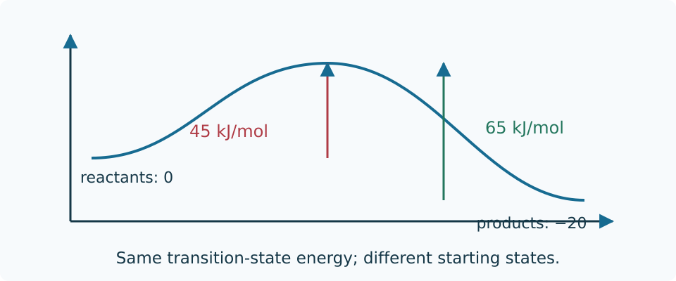
Use each minimum as its own baseline
Read the forward and reverse barriers from reactants0, transition state +45 and products−20 kJ/mol.
Distinguish favourable from fast
Use each minimum as its own baseline
The endpoint ΔG is −20 kJ/mol. Explain why a45 kJ/mol forward barrier still matters even though the products are lower.
Predict before the worked drawing
For OH⁻ + CH₃Br, draw the new bond and the departing bond pair in one elementary step. What species must not be inserted between them?
One elementary step can use several arrows
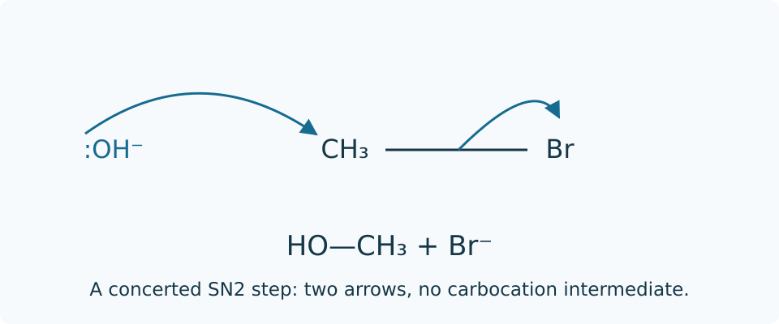
Two electron pairs move together in methyl bromide substitution by hydroxide.
Concerted means one step with no intermediate between bond breaking and bond making.
Protons transfer; oxygen labels stay
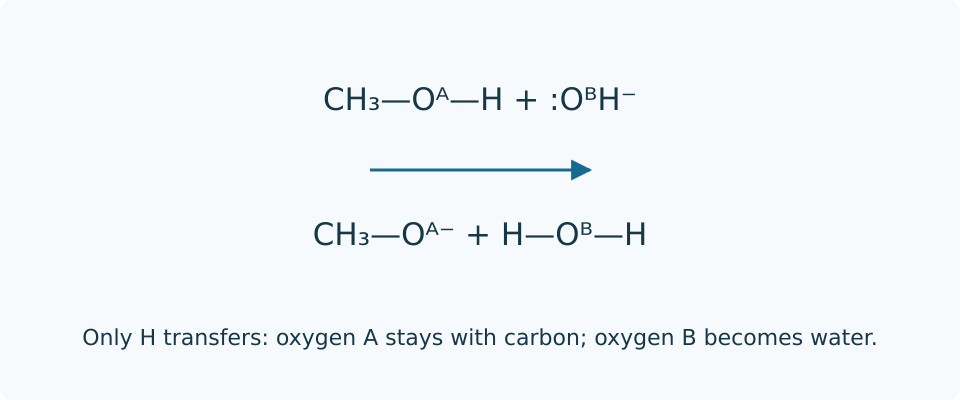
Protons transfer; oxygen labels stay
Identify which oxygen remains bonded to CH₃ after methanol deprotonation.
Use labels to reject an extra mechanism
Protons transfer; oxygen labels stay
A proposed answer puts oxygen A into water. What additional bond changes would that require beyond proton transfer?
Predict before the worked drawing
An alkoxide becomes alcohol after water is added. What happens to the proton-donor water? Write it rather than supplying an unexplained H⁺.
A proton must come from a species

Ethoxide receives a proton from water, and hydroxide is produced.
Write the proton donor and its conjugate base. A work-up is a chemical step, not a source of unexplained H atoms.
Two contributors describe one ion
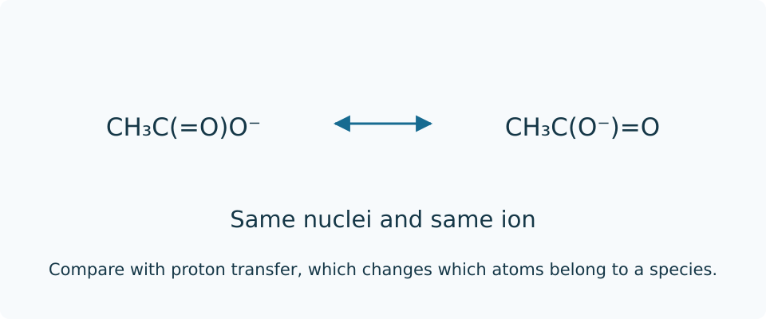
Two contributors describe one ion
Compare the positions of C, O and H nuclei across ethanoate resonance contributors. What changes?
Contrast a chemical equilibrium
Two contributors describe one ion
Now write CH₃COOH⇌CH₃COO⁻+H⁺. Why does that relation require an equilibrium arrow instead?
Predict before the worked drawing
Sketch one reaction step as a free-energy profile. Where is its transition state? Why is the horizontal axis not a clock?
Transition states are energy maxima
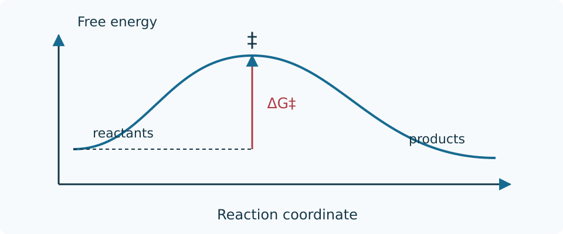
A one-step free-energy profile has one maximum between reactants and products.
The transition state is not an isolable intermediate. Its barrier helps determine the reaction rate.
A complete product includes its charge
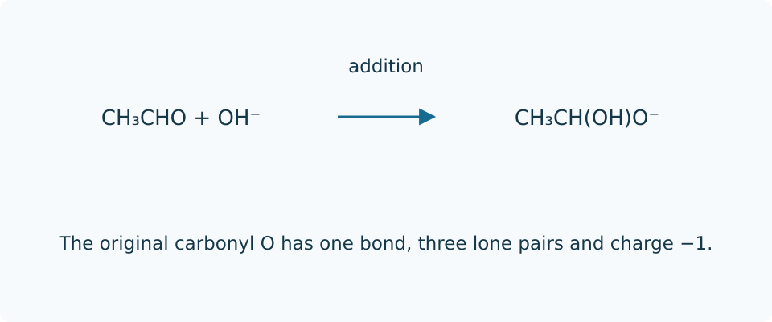
A complete product includes its charge
Find the original carbonyl oxygen in the tetrahedral addition product and count its single bond and three pairs.
Repair a wrong carbon charge
A complete product includes its charge
Would putting+1 at the tetrahedral carbon repair a missing oxygen-minus sign? Check the actual electrons and net charge.
Predict before the worked drawing
Sketch a two-step profile. Place the intermediate and both transition states. How would you measure the second step’s barrier?
An intermediate occupies a minimum
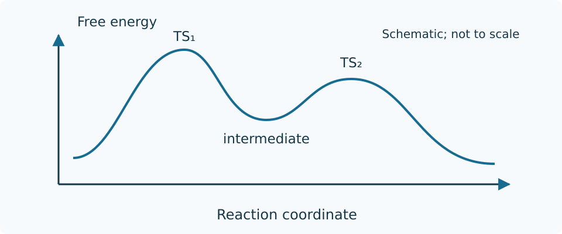
A two-step schematic path has two transition states and an intermediate free-energy minimum.
Count steps by maxima, not by the number of curved arrows. An intermediate has a finite lifetime.
Cancel species only after summing real steps
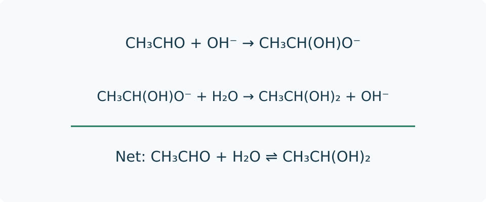
Cancel species only after summing real steps
Add the two hydrate-forming equations and mark the alkoxide as intermediate.
Identify the regenerated participant
Cancel species only after summing real steps
Explain why hydroxide is a catalyst here, while water is a net reactant. Is every oxygen atom necessarily the same after cancellation?
Predict before the worked drawing
Can two different barriers join the same reactant/product free energies? Predict what this means for catalysis and equilibrium.
Catalysis changes the pathway
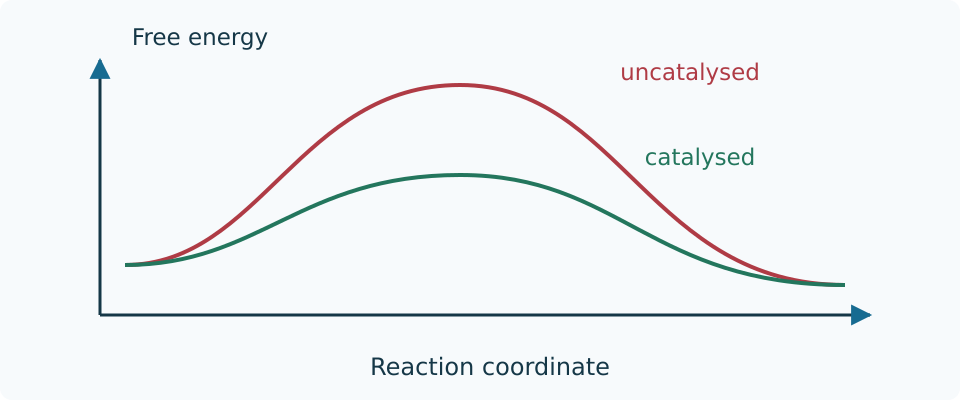
Catalysed and uncatalysed paths have the same reactant and product energies but different barriers.
A catalyst can increase the rate while leaving the overall equilibrium constant unchanged.
Predict before the worked drawing
For OH⁻ + CH₃Br → CH₃OH + Br⁻, inventory C, H, O and Br and the total charge. Which omission is easiest to miss?
Use an atom and charge audit
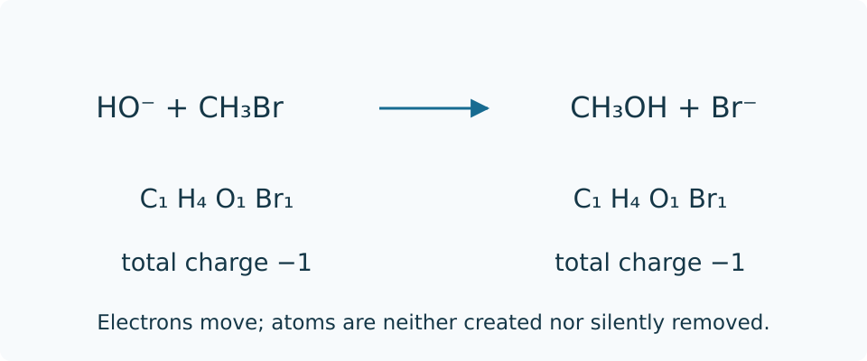
Substitution conserves C, H, O and Br and has total charge minus one on both sides.
After every step, check valence, atoms and net charge. Add implied hydrogens when the audit is unclear.
Nucleophilicity and basicity ask different questions
A base accepts a proton; a nucleophile attacks an electrophilic centre. The same species can do both, but the preferred outcome depends on the substrate and conditions.
Identify the atom attacked before naming the process.
Repair an impossible step
A student draws OH⁻ adding to a carbonyl but leaves the C=O double bond intact.
Draw all bonds to that carbon. Which electron pair must move, and where does the negative charge end up?
Explain an energy diagram
Sketch a two-step path. Mark both transition states and the intermediate.
Which feature would change if a catalyst offers a faster path? Which endpoint energy difference stays the same?
Use the same reasoning in practice
Complete the practice and worked examples, then the self-check.
Optional textbook support: selected Solomons chapter 3 and 6 sections. The reading guide explains the provisional book mapping.